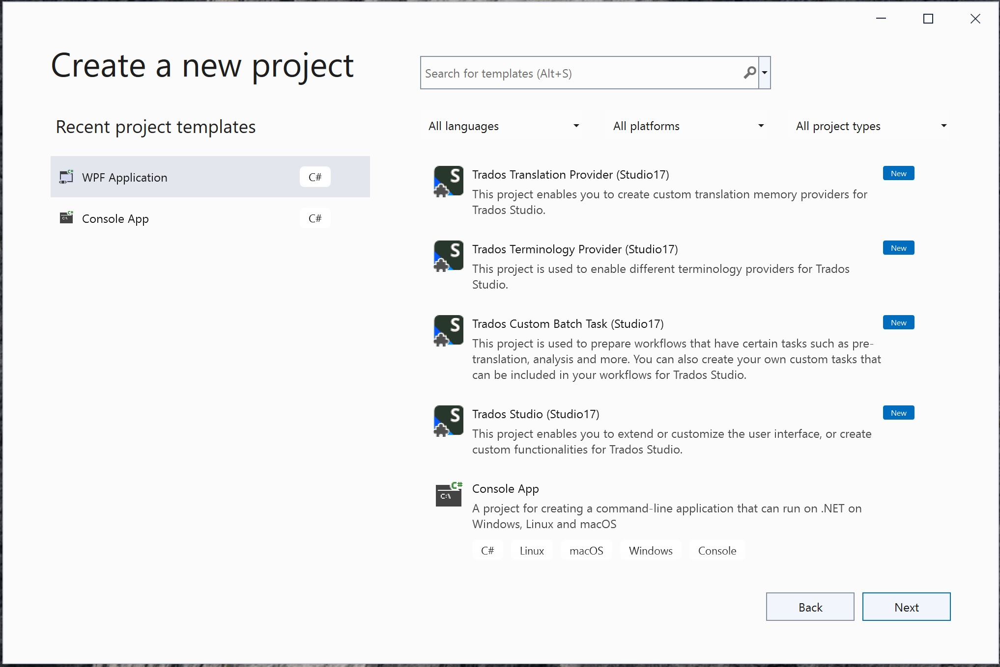
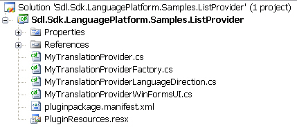
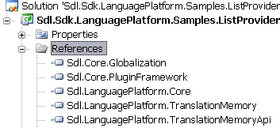

Setting up the Project
To implement a custom translation provider plug-in, create a new class library project in Microsoft Visual Studio 2022.
Install the SDK on your development machine
Before you develop plug-ins for Trados Studio, make sure that the SDK is installed on your development machine. The SDK installer adds new templates to your Microsoft Visual Studio 2022 environment, as shown in the screenshot below. For the plug-in type covered in this chapter, choose Translation Provider Plug-in.
Please also refer to Setting up a Development Machine.
Set up your translation provider plug-in project
Start by creating a new project in Microsoft Visual Studio 2022. In the New Project dialog box, select the Translation Provider Plug-in template and rename the project to Sdk.LanguagePlatform.Samples.ListProvider:

The template provides the minimum code, or stubs, that you need to build a valid translation provider. The stubs do not include the application logic. The following items are included by default in the project:

Your implementation might require additional classes, such as a form for the user interface that configures plug-in settings. For example, when file TMs are selected for a project, a dialog box lets users choose the TM files. In this implementation, users select the delimited list file and enter the delimiter character. See also Implementing the Plug-in User Interface.
In addition to the stubs, the project template includes the required references listed below:
- Sdl.Core.PluginFramework
- Sdl.LanguagePlatform.Core
- Sdl.LanguagePlatform.TranslationMemory
- Sdl.LanguagePlatform.TranslationMemoryApi

Note
The PluginProperties class file in the Properties subfolder contains a string value named Plugin_Name. This plug-in attribute marks the project as a plug-in project. Plugin_Name is a resource string defined in PluginResources.resx, which is also part of the template. See also The Resources File.
using Sdl.Core.PluginFramework;
// TODO: edit the Plugin_Name string in PluginResources.resx to change the name of your plug-in
[assembly: Plugin("Plugin_Name")]